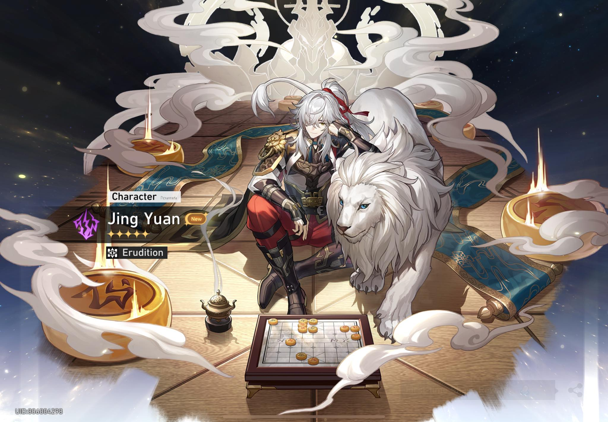
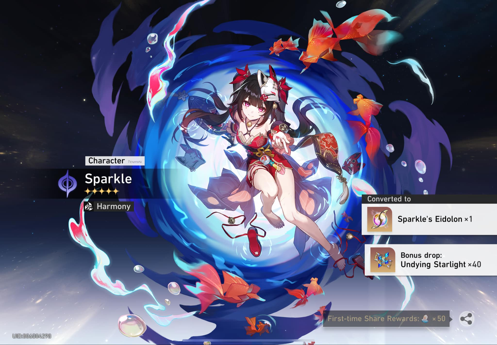
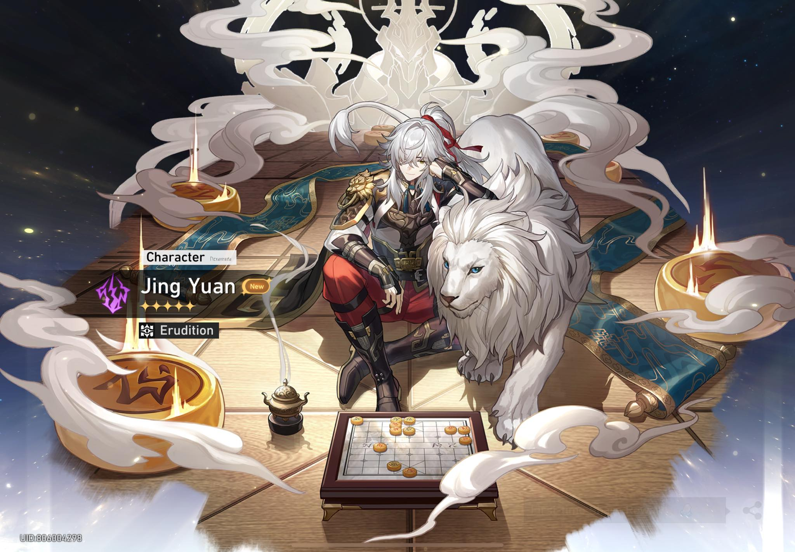
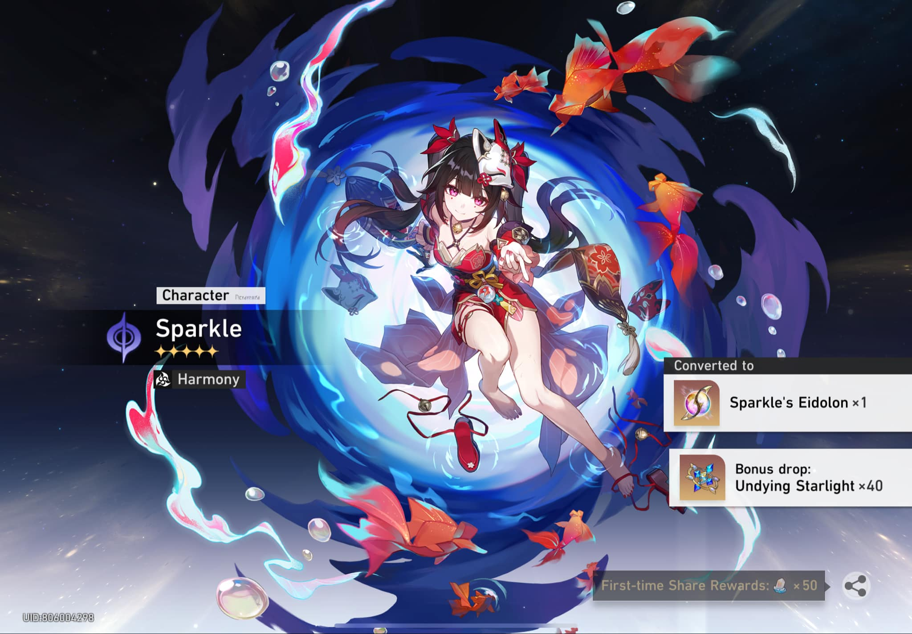

Honkai: Star Rail

Features the main character, who is referred to as the Trailblazer, travelling across planets through the Astral Express to help and connect the worlds while resolving disasters caused by "Stellarons" and other third-parties.


 


